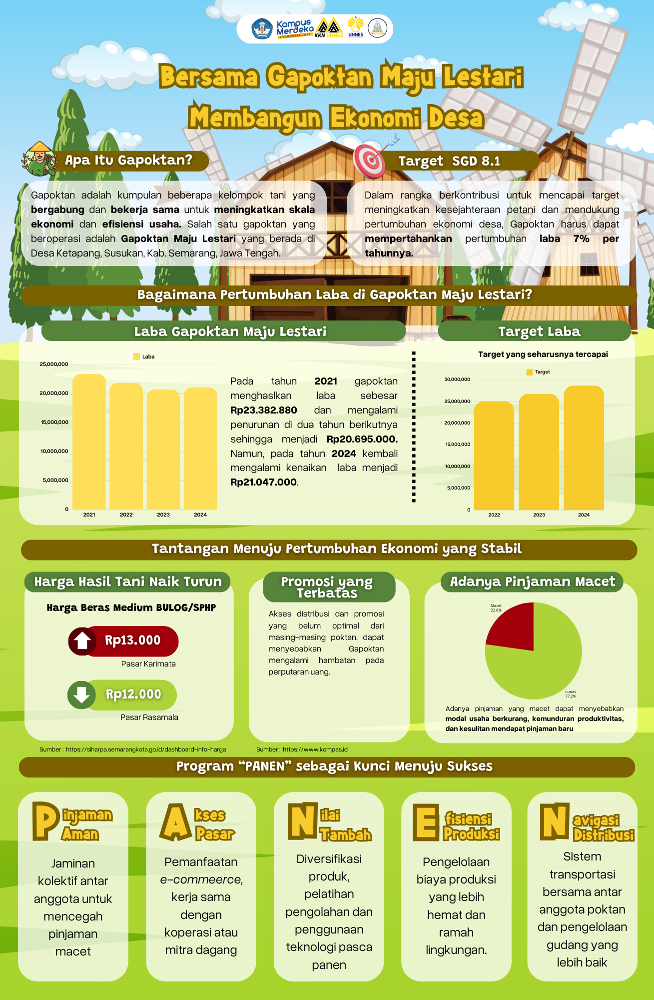

GAPOKTAN MAJU LESTARI
Beranda
Profil
Tentang
Keanggotaan
Data
Kontak
Infografis
Bentuk visualisasi dari data yang disajikan dalam bentuk grafik
Subjek

Infografis
Data Real Time
Grafik
©
2025. GAPOKTAN MAJU LESTARI